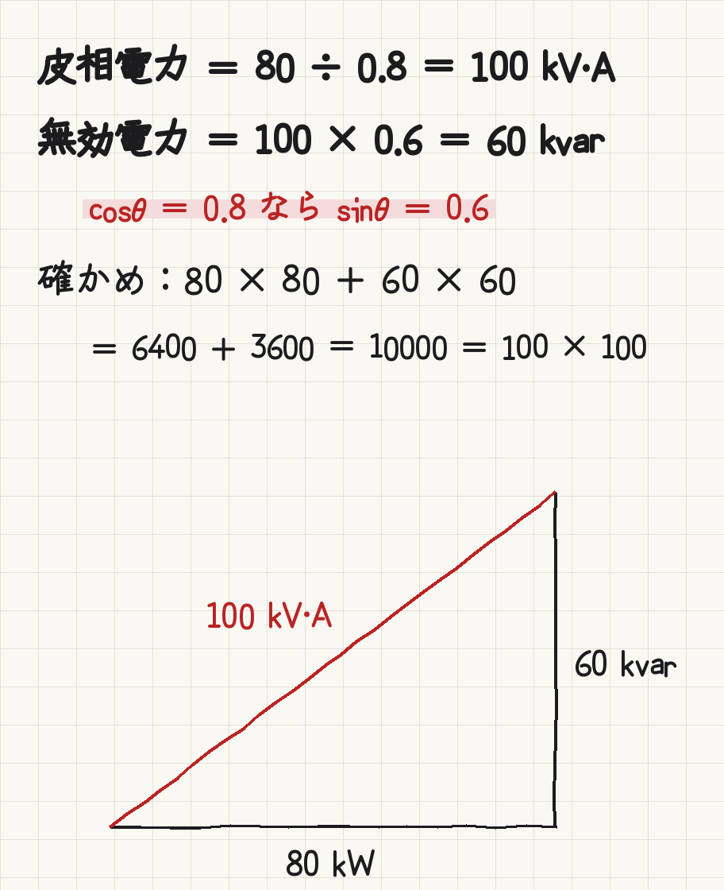

力率と無効電力：kW と kV·A と kvar は、どうつながるのか
力率の問題には、kW、kV·A、kvar の3つの単位が出てきます。どれをどれで割るのか、足してよいのかで手が止まります。
先に答え3つは、直角三角形の3つの辺です。斜めの辺が皮相電力（kV·A）、底の辺が有効電力（kW）、高さが無効電力（kvar）。力率は、底の辺 ÷ 斜めの辺 です。だから、皮相電力 ＝ 有効電力 ÷ 力率。80 kW で力率 0.8 なら、100 kV·A です。
どこで止まるか
止まる原因言葉や記号の意味が書かれていないkW、kV·A、kvar の3つが、直角三角形の3つの辺にあたることが、式の前に示されないことが多くあります。
80 kW で力率 0.8 の負荷の皮相電力を、80 × 0.8 ＝ 64 kV·A としてしまう。皮相電力は有効電力より必ず大きいので、割るのが正しい向きです。もう一つ、無効電力を 100 − 80 ＝ 20 kvar と引き算で出してしまう。辺の長さは、引き算ではつながりません。
3つの電力は、何を表しているか
皮相電力（kV·A）は、電圧 × 電流 をそのまま掛けた、見かけの大きさです。電線や変圧器は、この大きさに耐えるように選びます。
有効電力（kW）は、そのうち、実際に仕事（熱、光、回転）になる分です。電気料金の元になるのは、こちらです。
無効電力（kvar）は、コイルやコンデンサーと電源の間を行ったり来たりするだけで、仕事にならない分です。
力率は、見かけの大きさのうち、仕事になる分の割合です。力率 ＝ 有効電力 ÷ 皮相電力。0.8 なら、8割が仕事になっています。
なぜ、三角形になるのか
有効電力と無効電力は、向きが90度ずれた2つの矢印です。90度ずれた2つを合わせた長さは、足し算ではなく、直角三角形の斜めの辺の長さになります。
| 出したい物 | 式 |
|---|---|
| 皮相電力（kV·A） | 有効電力 ÷ 力率 |
| 有効電力（kW） | 皮相電力 × 力率 |
| 無効電力（kvar） | 皮相電力 × sin θ（力率 0.8 なら sin θ は 0.6） |
力率 0.8 と 0.6 は、組で覚えておくと速くなります。0.8 の2乗 ＋ 0.6 の2乗 ＝ 1 だからです。3・4・5 の直角三角形と同じ形です。
数値で確かめる
有効電力 80 kW、力率 0.8
皮相電力 ＝ 80 ÷ 0.8 ＝ 100 kV·A
無効電力 ＝ 100 × 0.6 ＝ 60 kvar
確かめ：80 の2乗 ＋ 60 の2乗 ＝ 6400 ＋ 3600 ＝ 10000 ＝ 100 の2乗
皮相電力 ＝ 80 ÷ 0.8 ＝ 100 kV·A
無効電力 ＝ 100 × 0.6 ＝ 60 kvar
確かめ：80 の2乗 ＋ 60 の2乗 ＝ 6400 ＋ 3600 ＝ 10000 ＝ 100 の2乗

確かめの1問
有効電力 60 kW、力率 0.6 の負荷があります。皮相電力と無効電力は、いくつですか。
有効電力 60 kW、力率 0.6 の負荷があります。皮相電力と無効電力は、いくつですか。
答え
皮相電力 ＝ 60 ÷ 0.6 ＝ 100 kV·A。力率が 0.6 なら sin θ は 0.8 なので、無効電力 ＝ 100 × 0.8 ＝ 80 kvar。コンデンサーで力率を上げる計算を、順を追って解く本：第4巻の案内
最終更新：2026年11月16日